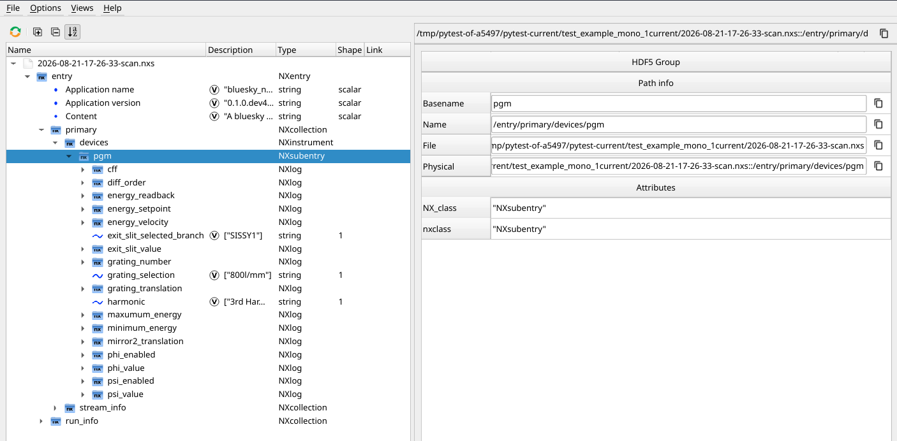
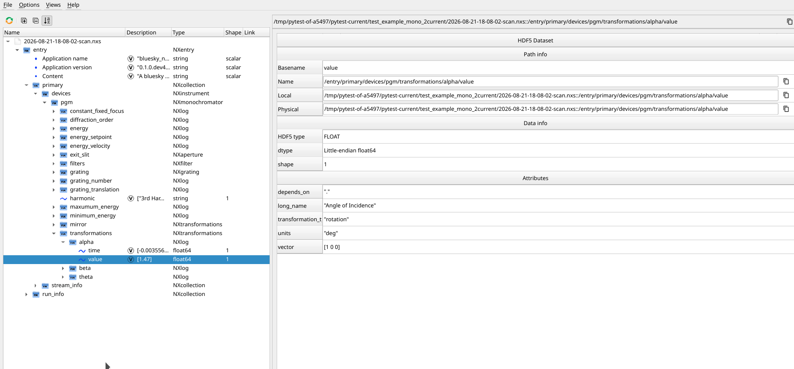

Examples#
Defining an ophyd Keithley as an NXdetector#
I would like to define some structure on my ophyd keithley device so that it can be understood to be an NXdetector.
This device currently has no NX_schema
import time
from ophyd import Component as Cpt
from ophyd import Device, EpicsSignal, EpicsSignalRO, Kind
class Keithley(Device):
readback = Cpt(EpicsSignalRO, "rdCur", kind=Kind.hinted, labels={"detectors", "electrometers"})
init_cmd = Cpt(EpicsSignal, "cmdStart", kind=Kind.omitted)
abort_cmd = Cpt(EpicsSignal, "cmdCancel", kind=Kind.omitted)
trigger_cmd = Cpt(EpicsSignal, "rdCur.PROC", kind=Kind.omitted)
zero_check = Cpt(EpicsSignal, "cmdZeroCheck", kind=Kind.config)
zero_correct = Cpt(EpicsSignal, "cmdZeroCorrect", kind=Kind.config)
measure_delay = Cpt(EpicsSignal, "rdCur.MDEL", kind=Kind.config)
function = Cpt(EpicsSignal, "rbkFunc", write_pv="setFunc", string="True", kind=Kind.config)
reset = Cpt(EpicsSignal, "cmdReset.PROC", kind=Kind.config)
scan = Cpt(EpicsSignal, "fwdMeas.SCAN", string="True", kind=Kind.config)
range_current = Cpt(
EpicsSignal, "rbkRangeCur", write_pv="setRangeCur", string="True", kind=Kind.config
)
auto_range_current = Cpt(EpicsSignal, "rbkRangeCurAuto", string="True", kind=Kind.config)
auto_range_current_lower_limit = Cpt(EpicsSignal, "setRangeCurAutoLLIM", kind=Kind.config)
auto_range_current_upper_limit = Cpt(EpicsSignal, "setRangeCurAutoULIM", kind=Kind.config)
number_power_line_cycles = Cpt(
EpicsSignal, "rbkIntegrTime", write_pv="setIntegrTime", kind=Kind.config
)
integration_time = Cpt(
EpicsSignal, "rbkIntegrTimeSec", write_pv="setIntegrTimeSec", kind=Kind.config
)
median_filter_rank = Cpt(
EpicsSignal, "rbkFiltMedRnk", write_pv="setFiltMedRnk", kind=Kind.config
)
median_filter_enable = Cpt(
EpicsSignal, "rbkFiltMedEnable", write_pv="cmdFiltMedEnable", kind=Kind.config
)
average_filter_count = Cpt(
EpicsSignal, "rbkFiltAverCnt", write_pv="setFiltAverCnt", kind=Kind.config
)
average_filter_enable = Cpt(
EpicsSignal, "rbkFiltAverEnable", write_pv="cmdFiltAverEnable", kind=Kind.config
)
arm_source = Cpt(
EpicsSignal, "rbkArmSrc", write_pv="setArmSrc", string="True", kind=Kind.config
)
trigger_source = Cpt(
EpicsSignal, "rbkTrgSrc", write_pv="setTrgSrc", string="True", kind=Kind.config
)
trigger_delay = Cpt(EpicsSignal, "rbkTrgDly", write_pv="setTrgDly", kind=Kind.config)
model = Cpt(EpicsSignalRO, "idn", kind=Kind.config)
front_panel_enable = Cpt(
EpicsSignal, "rbkDisp", write_pv="cmdDisp", string="True", kind=Kind.config
) # default to "On"
def __init__(self, prefix: str, *, name: str | None = None, **kwargs) -> None:
super().__init__(prefix=prefix, name=name, **kwargs)
self.readback.name = self.name
def stage(self) -> list[object]:
self.scan.set("1 Second").wait()
self.init_cmd.set(1).wait()
self.measure_delay.set(-1).wait()
return super().stage()
def unstage(self):
time.sleep(1.0)
self._set_and_wait(self.scan, ".1 second")
return super().unstage()
def trigger(self):
return self.trigger_cmd.set(1)
keithley = Keithley("SOME-PREFIX", name="my-keithely")
assert keithley.hints == {'fields': ['my-keithely']}
To define some, I’m going to create a new file Keithely.yaml in the same directory as where my device definition of Keithley is. The definition will map data keys that will be read on the device to their fields in NXdetector.
$nxclass: "NXdetector"
trigger_delay_time_set: "trigger_delay"
time_of_flight: "integration_time"
raw_time_of_flight: "number_power_line_cycles"
serial_number: "model"
data: ""
stop_time: {timestamps_of_data_key: ""}
type: {constant: "Electrometer"}
description: {"constant": "Keithley electrometer"}
layout: {"constant": "point"}
acquisition_mode: {"constant": "triggered"}
$nxclassis a NeXus attribute which has to come from a constant.bluesky-nexusloads NXDL XML schema from a directory in your environment. This can be supplied by the environment variableBLUESKY_NEXUS_BASE_CLASSES_DIRECTORY, but defaults to the nexusformat schema packaged as a pypi requirement.NxBaseClass.buildthen builds a schema for converting bluesky devices into a NeXus structure from that NXDL. If you supply an incorrect NXDL name for any givenNxBaseClass, e.gNxBaseSchema.build("NXsome_name_which_doesnt_have_an_nxdl_file"), or a required item is missing in the supplied schema, then an error will be raised.The first four definitions simply map the data keys in the device (minus the name of the instance) to their name in the nexus schema. Since all data keys are added to the structure, it wouldn’t be strictly necessary to map these if the data key name were already equal to the name in the nexus structure… This isn’t always possible.
datais mapping to thereadbackdata key.readbackis given the same name as the device itself as a datakey, an so the name we use with it “” is.{
timestamps_of_data_key: “”} will end up as a field in NeXus which contains the timestamps of the readback.The last four are constant fields for any Keithley which you could connect to. If any subclass of this Keithley wanted to override them, then they could in their own schema.
from bluesky_nexus.device import NxDevice
from bluesky_nexus.schema.nx_base_class import NxBaseClass
class Keithley(NxDevice, Device):
BLUESKY_NEXUS_BASE_CLASS = NxBaseClass.from_path("Keithley.yaml")
readback = Cpt(EpicsSignalRO, "rdCur", kind=Kind.hinted, labels={"detectors", "electrometers"})
... # And so on
keithley = Keithley("SOME-PREFIX", name="my-keithely")
assert keithley.hints == {
"NX_class": "NXdetector",
"NX_schema": {
"$nxclass": "NXdetector",
"acquisition_mode": {"constant": "triggered"},
"data": "",
"description": {"constant": "Keithley electrometer"},
"layout": {"constant": "point"},
"raw_time_of_flight": "number_power_line_cycles",
"serial_number": "model",
"stop_time": {"timestamps_of_data_key": ""},
"time_of_flight": "integration_time",
"trigger_delay_time_set": "trigger_delay",
"type": {"constant": "Electrometer"},
},
"fields": ["my-keithely_readback"],
}
Now when any instance of Keithley is read, bluesky_nexus will place the structure into an NXdetector. As you can see from the below image (silx viewer), all the data keys we didn’t reference in our schema are also present in the NeXus structure.
Simulated Monochromator#
A monochromator is a substantially more complicated to define than the above. Shown below is an ophyd async sim device based off a monochromator class we have defined at bessyii.
from ophyd.signal import DEFAULT_TIMEOUT
from ophyd_async.core import (
DEFAULT_TIMEOUT,
AsyncStatus,
DeviceMock,
StandardReadable,
StrictEnum,
callback_on_mock_put,
set_mock_value,
soft_signal_r_and_setter,
soft_signal_rw,
)
from ophyd_async.core import StandardReadableFormat as Fmt
class ExitSlitBranch(StrictEnum):
SISSY1 = "SISSY1"
OAESE = "OAESE"
CAT = "CAT"
class ExitSlit(StandardReadable):
def __init__(self, initial_value: float = 0.0, name: str = "") -> None:
super().__init__(name=name)
with self.add_children_as_readables():
self.value = soft_signal_rw(float, initial_value=initial_value, units="um")
with self.add_children_as_readables(Fmt.CONFIG_SIGNAL):
self.selected_branch = soft_signal_rw(ExitSlitBranch)
class GratingTranslationSelectionOptions(StrictEnum):
POSITION_UNDEFINED = ""
POSITION_400 = "400l/mm"
POSITION_800 = "800l/mm"
class GratingTranslation(StandardReadable):
def __init__(self, name: str = ""):
super().__init__(name=name)
with self.add_children_as_readables():
self.translation= soft_signal_rw(
float, initial_value=800., units="l/mm"
)
with self.add_children_as_readables(Fmt.CONFIG_SIGNAL):
self.selection = soft_signal_rw(
GratingTranslationSelectionOptions, initial_value=GratingTranslationSelectionOptions.POSITION_800
)
async def connect(self, mock: bool | DeviceMock = False, timeout: float = DEFAULT_TIMEOUT, force_reconnect: bool = False) -> None:
await super().connect(mock, timeout, force_reconnect)
callback_on_mock_put(
self.selection, self._add_position_from_selector
)
callback_on_mock_put(
self.translation, self._set_position_selector_to_undefined
)
async def _set_position_selector_to_undefined(self, value: float):
if value not in (800., 400.):
set_mock_value(self.selection, GratingTranslationSelectionOptions.POSITION_UNDEFINED)
async def _add_position_from_selector(self, value: GratingTranslationSelectionOptions):
if value is GratingTranslationSelectionOptions.POSITION_400 or value is GratingTranslationSelectionOptions.POSITION_800:
await self.translation.set(float(value.value.removesuffix("l/mm")))
class Filter(StandardReadable):
def __init__(self, name: str = "") -> None:
super().__init__(name=name)
with self.add_children_as_readables():
self.value = soft_signal_rw(float, units="deg", initial_value=0.8)
with self.add_children_as_readables(Fmt.CONFIG_SIGNAL):
self.enabled = soft_signal_rw(bool, initial_value=True)
class Harmonic(StrictEnum):
FIRST = "1st Harmonic"
THIRD = "3rd Harmonic"
FIFTH = "5th Harmonic"
SEVENTH = "7th Harmonic"
NINTH = "9th Harmonic"
ELEVENTH = "11th Harmonic"
THIRTEENTH = "13th Harmonic"
MAX_FLUX = "Max Flux"
AUTO = "Auto"
class Energy(StandardReadable):
def __init__(self, name: str = "", initial_value: float = 0.0):
super().__init__(name=name)
with self.add_children_as_readables():
self.setpoint = soft_signal_rw(float, units="eV", initial_value=initial_value)
self.readback = soft_signal_rw(float, units="eV", initial_value=initial_value)
with self.add_children_as_readables(Fmt.CHILD):
self.velocity = soft_signal_rw(float, units="eV/s", initial_value=1)
self.sweep_offset = soft_signal_rw(float, initial_value=0.0)
@AsyncStatus.wrap
async def set(self, value: float):
await self.setpoint.set(value)
await self.readback.set(value)
class PlaneGratingMonochromator(StandardReadable):
"""A simulated plane grating monochromator."""
def __init__(self, name: str = "") -> None:
super().__init__(name=name)
with self.add_children_as_readables():
self.energy = Energy(initial_value=545.0)
self.exit_slit = ExitSlit(initial_value=30)
self.mirror2_translation = soft_signal_rw(float, initial_value=291.02, units="mm")
self.phi = Filter()
self.psi = Filter()
self.grating = GratingTranslation()
with self.add_children_as_readables(format=Fmt.CONFIG_SIGNAL):
self.harmonic = soft_signal_rw(Harmonic, initial_value=Harmonic.THIRD)
self.maxumum_energy, _ = soft_signal_r_and_setter(
float, initial_value=1253.5, units="eV"
)
self.minimum_energy, _ = soft_signal_r_and_setter(
float, initial_value=251.2, units="eV"
)
self.diff_order, _ = soft_signal_r_and_setter(int, initial_value=1)
self.grating_number, _ = soft_signal_r_and_setter(int, initial_value=0)
self.cff = soft_signal_rw(float, initial_value=2.25)
self.alpha, _ = soft_signal_r_and_setter(float, initial_value=1.47, units="deg")
self.beta, _ = soft_signal_r_and_setter(float, 3.23, units="deg")
self.theta, _ = soft_signal_r_and_setter(float, initial_value=2.4, units="deg")
Set up a run engine subscribed to our nexus writer callback:
from pathlib import Path
from bluesky import RunEngine
from bluesky_nexus.callbacks import NexusHdfWriterCallback
RE = RunEngine()
# Will output a hdf5 file for each bluesky plan.
RE.subscribe(NexusHdfWriterCallback(Path(".")))
… and run the plan:
from bluesky import plans as bp
from ophyd_async.plan_stubs import ensure_connected
mono = PlaneGratingMonochromator(name="pgm")
RE(ensure_connected(mono, mock=True))
RE(bp.scan([mono], mono.energy, 545, 550, num=10))
We can open the file in whatever nexus viewer. Here’s silx view *.nxs:

All the data keys are present. Notice that
NeXus names have automatically converted
"-"to"_". This is because"-"is not permitted in NeXus keys.All numerical data is automatically an
NXlogwith it’s timestamps. String data is not accepted in anNXlogso only the field is given.Configuration data keys and read data keys live alongside each other.
bluesky_nexusmakes no distinction between the two.
It’s time to describe this as a monochromator.
We make a new schema called PlanGratingMonochromator.yaml and include it in the directory where I’m defining my device.
$nxclass: NXmonochromator
# This datakey would be added anyway, but I want to conform to the
# name in NXmonochromator.
energy: energy-readback
exit_slit:
# NXaperture
$nxclass: NXaperture
size: exit_slit-value
selected_branch: exit_slit-selected_branch
# I want to give this a fuller name.
diffraction_order: diff_order
# This group isn't explicitely part of NXmonochromator,
# but it's the nicest place to store information about our
# filters.
filters:
$nxclass: NXfilter
psi_enabled: psi-enabled
phi_enabled: phi-enabled
orientation:
$nxclass: NXtransformations
# Since `depends_on` has not been specified, all NXtransformations
# are using the deafault coordinate system:
# https://manual.nexusformat.org/design.html#the-nexus-coordinate-system
# The filters rotate in +X to block the beam.
psi: {data_key: psi-value, $vector: [1, 0, 0], $transformation_type: rotation}
phi: {data_key: phi-value, $vector: [1, 0, 0], $transformation_type: rotation}
mirror:
$nxclass: NXtransformations
# The mirror which goes along the Z axis to block the beam.
mirror2: {data_key: mirror2_translation, $vector: [0, 0, 1], $transformation_type: translation}
# We store the cff, but we replace the units "l/mm" with "1/mm"
# as it's what NeXus prefers.
constant_fixed_focus: {data_key: cff, $units: "1/mm"}
# GRATING group in the monochromator.
grating:
$nxclass: NXgrating
# These fields aren't explicitely defined in NXgrating,
# but we don't have the PVs for the more full information
# there.
line_density_selection: grating-selection
line_density: grating-value
transformations:
$nxclass: NXtransformations
alpha: {data_key: alpha, $transformation_type: rotation, $vector: [1, 0, 0], $long_name: "Angle of Incidence", $depends_on: "."}
beta: {data_key: beta, $transformation_type: rotation, $vector: [1, 0, 0], $long_name: "Angle of Diffraction", $depends_on: "."}
theta: {data_key: theta, $transformation_type: rotation, $vector: [0, 0, 1], $long_name: "Grating Rotation Angle", $depends_on: "."}
The class attribute
$nxclass: NXmonochromatoris used. This group is a nexusformatNXmonochromator, and the schema will be validated against the pydantic class loaded from NXDLNxBaseSchema.build("NXmonochromator)]The readback field
energy-readbackis given the nameenergyto conform to the NeXus base class.A sub group is made for the exit slit.
NXmonochromatorexpects exit slits to be defined in a subgroup with this name. The data keys relevant to exit slit are mapped here. The$nclass: NXaperturewill mean that the sub group definitions will be making anNXapertureand validated againstNxBaseClass.build("NXaperture")diff_orderis not part ofNXmonochromator, but we would like to give it a full name when it’s written instead of the shortened data key.We define some filters which are relevant to the monochromator. The coordinates of the transformations for both are used given as constants.
We give the full name of constant fixed focus, we also overwrite the units we get through EPICS to the standard that NeXus expects.
The class defines
GRATINGgeneric sub group(s). We include one with the units we can define.Alpha beta and gamma make more sense in their own subgroup. We provide long names to better describe them.
Now we load the schema into our device. Any obvious errors we’ve made in our schema across the group and subgroups will be caught by pydantic.
Note
The pydantic schema cannot validate whether the data keys specified will actually end up being read by the device. It can only verify that, should they exist, the specification given will be a correct NXmonochromator.
from bluesky_nexus.device import NxDevice
from bluesky_nexus.schema.nx_base_class import NxBaseClass
class PlaneGratingMonochromator(NxDevice, StandardReadable):
"""A simulated plane grating monochromator."""
BLUESKY_NEXUS_BASE_CLASS = NxBaseClass.from_path("PlaneGratingMonochromator.yaml")
def __init__(self, name: str = "") -> None:
super().__init__(name=name)
with self.add_children_as_readables():
self.energy = Energy(initial_value=545.0)
self.exit_slit = ExitSlit(initial_value=30)
self.mirror2_translation = soft_signal_rw(float, initial_value=291.02, units="mm")
self.phi = Filter()
self.psi = Filter()
self.grating = GratingTranslation()
with self.add_children_as_readables(format=Fmt.CONFIG_SIGNAL):
self.harmonic = soft_signal_rw(Harmonic, initial_value=Harmonic.THIRD)
self.maxumum_energy, _ = soft_signal_r_and_setter(
float, initial_value=1253.5, units="eV"
)
self.minimum_energy, _ = soft_signal_r_and_setter(
float, initial_value=251.2, units="eV"
)
self.diff_order, _ = soft_signal_r_and_setter(int, initial_value=1)
self.grating_number, _ = soft_signal_r_and_setter(int, initial_value=0)
self.cff = soft_signal_rw(float, initial_value=2.25)
self.alpha, _ = soft_signal_r_and_setter(float, initial_value=1.47, units="deg")
self.beta, _ = soft_signal_r_and_setter(float, 3.23, units="deg")
self.theta, _ = soft_signal_r_and_setter(float, initial_value=2.4, units="deg")
… and run the plan again. Now viewing my file in sphinx, I can see that:

All units are correct. Units taken from the signal have been parsed. The units I specified in
constant_fixed_focushave been used instead of those from the signal.All groups and subgroups have the correct classes.
The long names I gave the transformations have been saved to their attributes. Their units have been parsed from the signal.